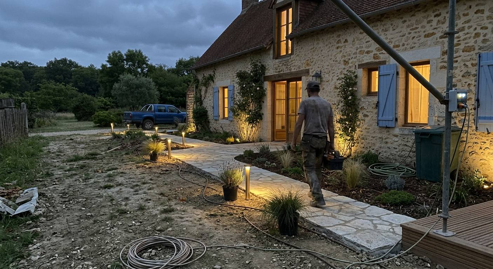
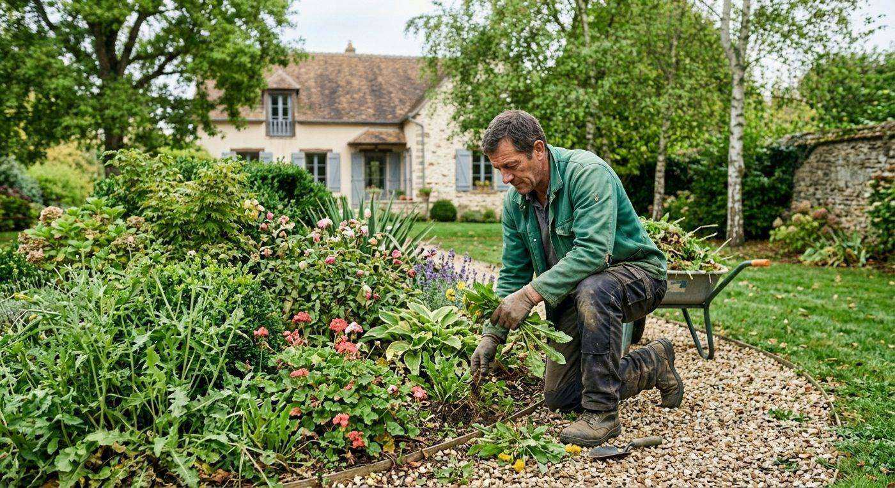

Création de jardins en Essonne
Création et plantation, pelouse en plaques ou par semis, nivellement de terrain, rocailles et pose de grillage.



Création et plantation
Création de parcs et de jardins : plantation, nivellement de terrain et engazonnement. Nous vous conseillons pour réaliser le jardin dont vous avez toujours rêvé.
- Création et plantation diverse
- Création de pelouse
- Nivellement de terrain
- Création de rocaille et pose de grillage
Les prestations de création
Aller directement à la prestation qui vous intéresse :

Pelouse et nivellement
Un terrain bien préparé, puis une pelouse installée en plaques ou par semis.
- Création de pelouse en plaques
- Création de pelouse par semis
- Nivellement de terrain
- Engazonnement

Rocailles et grillage
Création de rocaille
Des rocailles pour structurer et décorer votre jardin.
Pose de grillage
Pose de grillage pour délimiter votre terrain.
Un terrain à transformer ?
Décrivez votre projet à l’équipe : nous convenons d’un rendez-vous pour l’élaboration du devis.